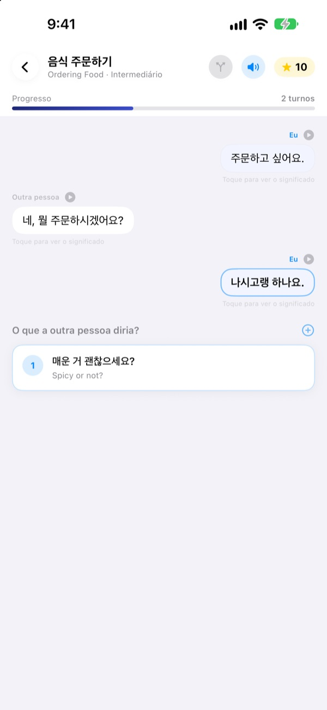
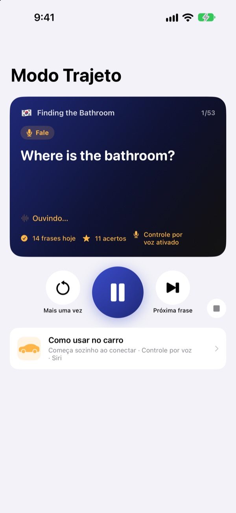
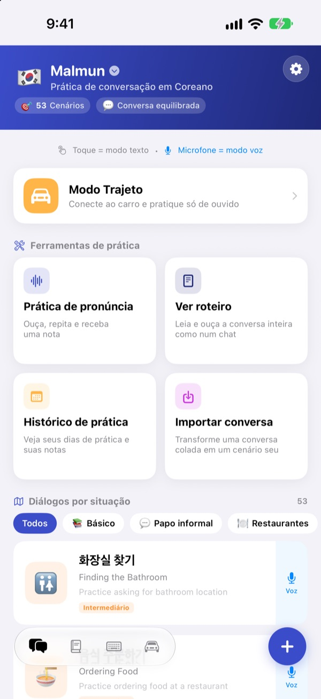
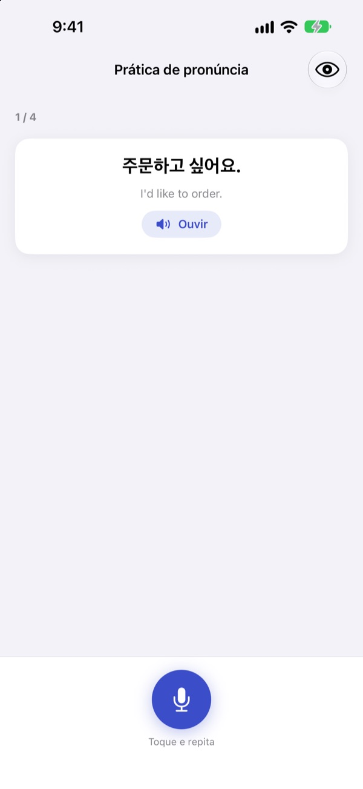

Chega de travar.
Fale você primeiro.
Malmun é um treino de conversação em que cada resposta escolhida leva o diálogo para um lado diferente. Aprenda coreano, japonês, chinês, espanhol ou indonésio e, no carro, pratique só com os ouvidos e a voz.
Diálogos com ramificações, prática de pronúncia e vocabulário são grátis.

Continue a conversa você mesmo
Este é “Bom dia”, um diálogo em indonésio do jeito que está no app. Cada frase que você escolhe leva a conversa para outro rumo.
Decorou a frase e travou na hora de responder?
No livro, os diálogos sempre seguem o roteiro. Na vida real, a pessoa responde algo que você não esperava. O Malmun deixa você percorrer antes todos os caminhos de uma conversa, para ter a próxima frase pronta, venha o que vier. Até a volta para casa vira hora de praticar.
Pratique de ouvido enquanto dirige
O Modo Trajeto toca nos alto-falantes do carro via Bluetooth ou CarPlay. Primeiro você ouve o significado, um sinal dá tempo para você falar e depois a resposta toca uma vez devagar e outra em velocidade normal.
Avance e repita pelos botões do volante, ou diga next, again ou slower na sua vez. Pausa sozinho quando o GPS dá instruções.

Todas as situações de viagem e do dia a dia
Cada idioma tem 53 diálogos por situação: o básico, papo do dia a dia, restaurante, transporte, aeroporto, hotel, compras, passeios e emergências.
Para quem aprende indonésio tem mais: 5 bate-papos feitos à mão, 3 cursos do dia com 6 cenas cada e cronograma semanal, e 100 palavras para viagem de trabalho.

Confira se você falou certo
A prática de pronúncia dá uma nota e marca com cores as palavras que você acertou e as que escaparam.
No roteiro, o diálogo inteiro aparece como um chat. Ouça tudo de uma vez ou esconda os significados para se testar.

Comece em três passos
- 1
Escolha um idioma
Toque na bandeira no topo da tela inicial. Frases e vocabulário ficam separados por idioma.
- 2
Abra um diálogo
Toque nas respostas no modo texto, ou toque no microfone e fale: o modo voz encontra a resposta mais parecida.
- 3
No carro, Modo Trajeto
Conecte o iPhone ao carro e aperte o play. Nem precisa olhar a tela.
Controles do Modo Trajeto
- Volante: próxima faixa
- Próxima frase
- Volante: faixa anterior
- A mesma frase de novo
- Botão de play
- Pausar e continuar
next·skip- Próxima frase
again·repeat- Ouvir de novo
slower·faster- Mudar a velocidade da leitura
next scene- Ir para o próximo diálogo
stop·pause- Parar de praticar
- Siri: “Iniciar prática do trajeto no Malmun”
- Começar sem tocar no iPhone
Com o app em português, os comandos de voz são falados em inglês. Eles só são ouvidos na sua vez, depois do sinal. A frase atual aparece nas informações de reprodução do carro. Não existe uma tela própria do app no CarPlay.
Quase tudo é grátis. O Malmun Pro libera o resto.
Grátis
- Bate-papos com ramificações e cursos do dia (indonésio)
- Diálogos por situação: o básico e papo do dia a dia
- Modo Trajeto, 3 cenas por dia
- Pronúncia, roteiro, importar diálogos, histórico de prática
- Minhas frases, cartões de vocabulário, teclado de frases
- Compartilhar cenários com amigos, criar cenários com IA
Malmun Pro
- Todos os diálogos por situação: restaurante, transporte, aeroporto, hotel, compras, passeios, emergências
- Modo Trajeto sem limite
- Vale para todos os idiomas
Assinatura anual ou compra única vitalícia
Veja os preços no app ou na App Store. A assinatura anual renova automaticamente, a menos que seja cancelada pelo menos 24 horas antes do fim do período.
Perguntas frequentes
Quais idiomas posso aprender?
Coreano, japonês, chinês, espanhol e indonésio. A interface fica em português, mas os significados das frases e os comandos de voz ficam em inglês. Por isso o inglês não aparece na lista.
Como uso no carro?
Conecte o iPhone ao carro por Bluetooth ou CarPlay, abra o Modo Trajeto e aperte o play. O som sai pelos alto-falantes do carro e a frase atual aparece em Reproduzindo. Você também pode dizer à Siri “Iniciar prática do trajeto no Malmun”, ou criar uma vez uma automação no app Atalhos para começar assim que o CarPlay (ou o Bluetooth do carro) conectar.
O microfone fica ouvindo o tempo todo?
Não. Ele só ouve na sua vez, depois do sinal, pelo microfone do iPhone, e o que ouve é processado no próprio aparelho.
Minha pronúncia não é reconhecida.
O reconhecimento de fala funciona no idioma que você está aprendendo. Tente num lugar mais silencioso e confira se o reconhecimento de fala desse idioma está baixado no aparelho.
Como adiciono o teclado?
Vá em Ajustes ▸ Geral ▸ Teclado ▸ Teclados ▸ Adicionar Novo Teclado e escolha o teclado do Malmun. Enquanto digita, toque no globo para trocar. Não precisa de acesso total. Para mostrar menos frases, toque no ícone do teclado no canto inferior direito da tela inicial ▸ Gerenciar teclado.
Não vejo um cenário que um amigo compartilhou.
O compartilhamento funciona pelo iCloud, então os dois precisam estar com a sessão do iCloud ativa. Se ainda não aparecer, feche o app por completo e abra de novo.
O que preciso para criar cenários com IA?
Coloque sua própria chave de API da Anthropic no app e escreva um tema: ele cria um diálogo novo. Todo o resto funciona sem chave.
Como cancelo ou peço reembolso?
Os pagamentos são feitos pela Apple. Para cancelar: Ajustes do iPhone ▸ Conta Apple ▸ Assinaturas ▸ Malmun. Para reembolso, peça à Apple em reportaproblem.apple.com.
Troquei de iPhone e perdi o Pro.
Entre com a mesma Conta Apple e, no Malmun, toque em Ajustes ▸ Malmun Pro ▸ Restaurar compras.
Onde fica salvo meu progresso?
Não precisa de conta. Seus dados ficam no aparelho e no seu próprio iCloud. Sem anúncios e sem rastreamento: só são enviadas estatísticas de uso anônimas e relatórios de erro. Bugs e pedidos também podem ir para o GitHub Issues (github.com/M1zz/IndonesianSmallTalk/issues).
Dúvidas ou sugestões? Escreva para leeo@kakao.com, use Ajustes ▸ Enviar feedback no app ou chame no Instagram @lee25_ios.